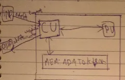

Infothing
EDVAC(1945)
ENIAC (1945-49)

- PU kéri a következő utasítást a CU-tól.
- A CU kiolvassa a memóriából és elküldi a PU-nak.
- PU kiszámolja az eredményt.
- PU elküldi az eredményt CU-nak.
- CU eltávolítja az eredményt a memóriába.
RISC és CISC Processzorok
RISC processzorok
CISC processzorok
- Egy gépi ciklus alatt végrehajtható egyszerű utasítások
- Csak a LOAD/STORE utasítások használhatják a tárat
- Jelentős pipelining feldolgozás
- Huzalozott utasítás-végrehajtás
- Rögzített hosszúságú utasítások
- Kevés utasítás és címzési mód
- Bonyolult fordítóprogram
- Nagyméretű regisztertár
- Az utasítások összetettek, több gépi ciklust igényelnek
- Több utasítás is igénybe veheti a tárolót
- A pipelining feldolgozás kismértékű
- Mikroprogram által vezérelt utasítás végrehajtás
- Változó hosszúságú utasítások
- Sokféle utasítás és címzési mód
- Bonyolult mikroprogram
- Kevés regiszter
Neumann elvek
- Teljesen elektronikus működés (ez Neumann idejében elektroncsöves felépítést jelentett, amit később a tranzisztoros, majd az integrált áramkörös felépítés követett)
- Kettes számrendszer használata (az összes művelet, pl. összeadás, szorzás, kettes számrendszerbeli logikai műveletekre redukálható)
- Belső memória használata
- Tárolt program elve. A számításokhoz szükséges adatokat és programutasításokat a gép azonos módon, egyaránt a belső memóriában (operatív tár) tárolja.
- Soros utasítás-végrehajtás (az utasítások végrehajtása időben egymás után történjen; ennek egy alternatívája a párhuzamos utasítás-végrehajtás, amikor több utasítás egyidejűleg is végrehajtható: ezt a lehetőséget Neumann elvetette)
- Univerzális felhasználhatóság, Turing-gép (programozhatóság; a különböző feladatok programokkal legyenek megoldva, nem pedig erre a célra épített hardverrel)